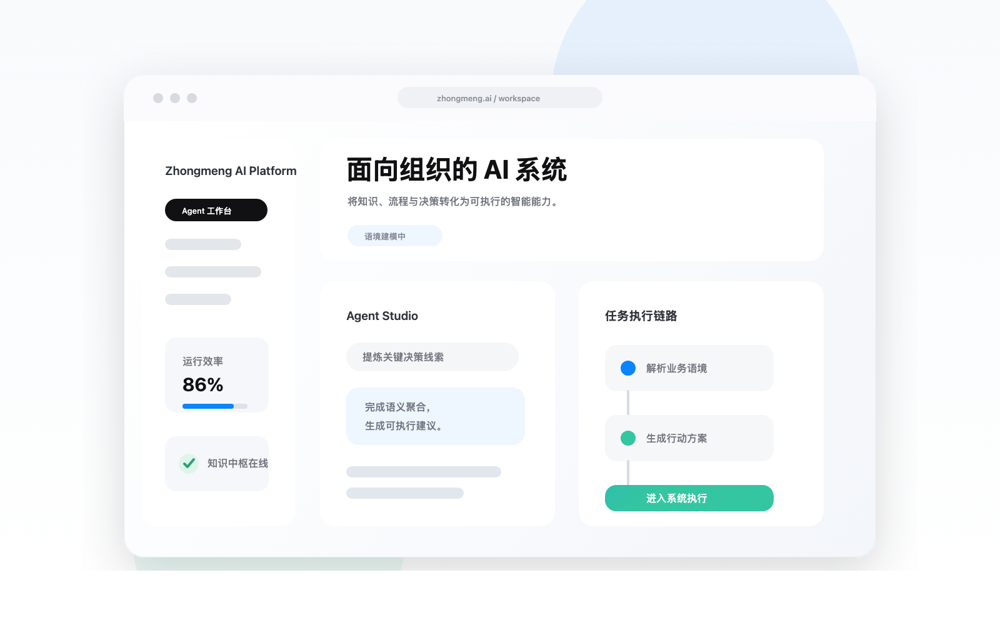

智能体系统
围绕真实岗位与业务目标，构建可理解上下文、可调用工具、可交付结果的 AI Agent。
AI-native systems for enterprise
种梦智能专注企业级 AI 软件与智能体系统，将知识、流程与决策沉淀为可调用、可追踪、可持续进化的数字能力。

产品理念
我们以智能体、工作流与知识中枢为核心，把分散的信息、判断和行动组织成一套稳定运行的企业智能系统。
围绕真实岗位与业务目标，构建可理解上下文、可调用工具、可交付结果的 AI Agent。
将跨系统、跨角色的任务链路抽象为可观测、可复用、可扩展的智能流程。
让企业知识从静态资料升级为可检索、可推理、可治理的组织资产。
系统能力
融合业务语料、流程规则和角色权限，使模型输出建立在真实组织语境之上。
连接工具、数据与审批节点，让智能体从建议走向执行，并保留完整过程记录。
以反馈、日志和知识更新驱动系统迭代，让 AI 能力随业务变化同步进化。
Build with Zhongmeng Intelligence
我们与长期主义的团队合作，把前沿模型转化为稳定、优雅、可持续扩展的软件系统。